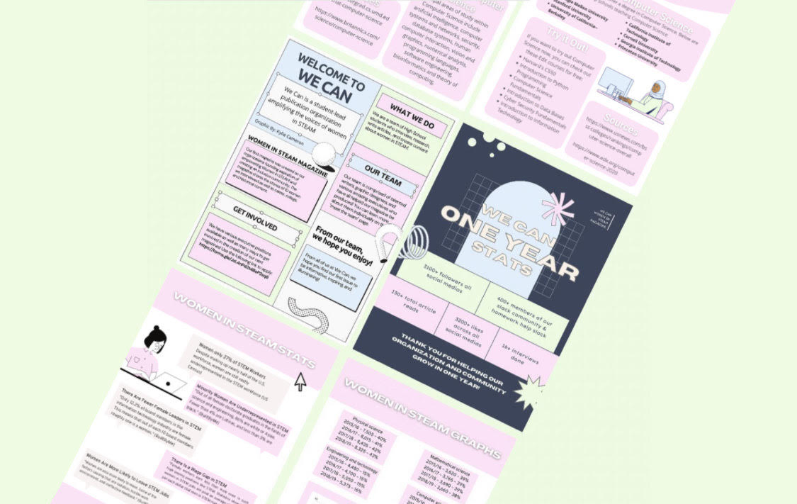
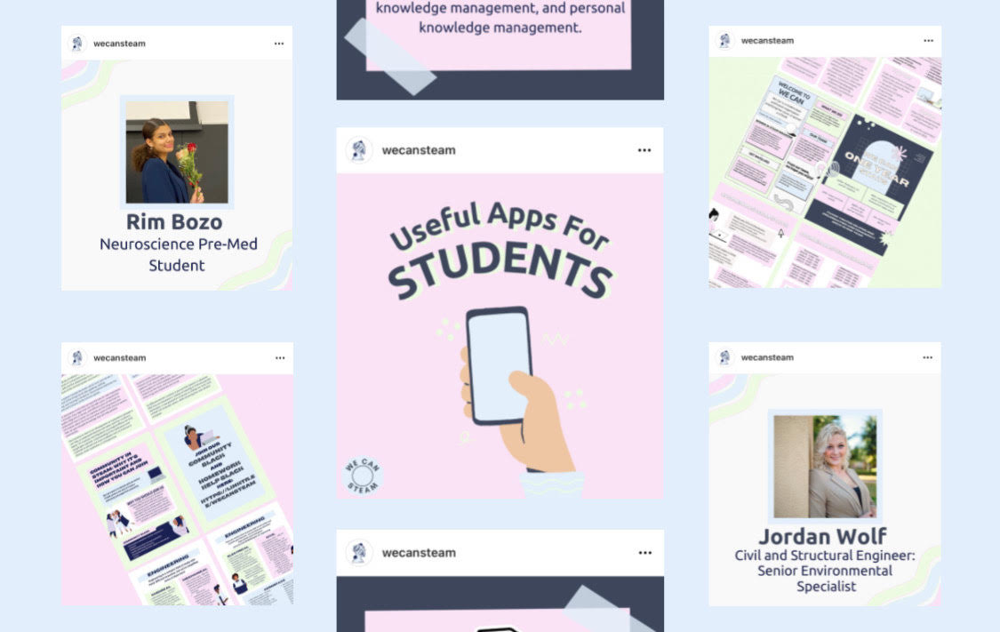

We Can's
Women in STEAM Magazine
A magazine I lead the creation of through We Can
consisting of various articles on
women in STEAM
Explore the Zine
|

Social Media
Managment & Design
I am also responsable for the managment
and many of the designs found on We Can's
social media sites
Explore the Gram
|